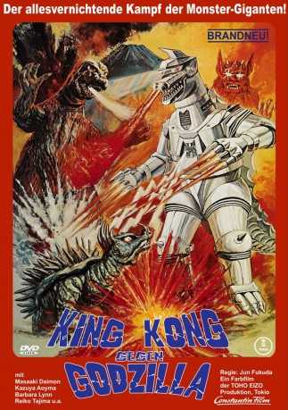

#12016 King Kong gegen Godzilla
Alternativ: Godzilla vs. Mechagodzilla (Englischer Titel)
 
 IMDB-Wertung: 6.4 / 10
IMDB-Wertung: 6.4 / 10  Metascore: 0
Metascore: 0 
Die Höhle des Königs Shisa wird freigelegt. In ihr befindet sich eine Statue und eine alte Prophezeiung. Die Weissagung erzählt davon das riesige Monster über die Menschheit kommen werden. Riesige Monster die Japan zerstören wollen? Wie absurd! Godzilla hat anscheinend auch davon gehört und er versucht deshalb das Industriegebiet bei Nacht zu zerstören. Dabei war Godzilla doch in der letzten Zeit so lieb und brav. Hat mit Hummern Volleyball gespielt, die Welt gerettet und sich rührend um den Nachwuchs gekümmert. Warum also ist er wieder böse geworden? Als der tollwütige Godzilla auch noch seinen alten Kumpel Anguirus angreift wird es allen klar. Die wütende Bestie ist gar nicht Godzilla sondern ein von Aliens nach den Maßen von Godzilla gebauter Roboter. Mit dieser Maschine soll nicht nur Godzilla besiegt, sondern auch die Menschheit versklavt werden. Professor Miyajima und andere Menschen wollen Godzilla helfen und erwecken König Shisa. Kommen sie gemeinsam gegen Mechagodzilla an?
Jahr: 1974
Dauer: 84 Minuten
FSK: 12
Land: Japan Studio: i-catcher mediaTonspuren:
Untertitel: Deutsch,
Auflösung: 1080p (1920x808) Größe: 6717 MB
Genre: Action, Horror, Sci-Fi, Fantasy
Regisseur: Jun Fukuda
Drehbuch: Jun Fukuda, Masami Fukushima, Shin'ichi Sekizawa, Hiroyasu Yamamura
Soundtrack: Masaru Satô
Darsteller:
- Akihiko Hirata als Professor Hideto Miyajima
- Masaaki Daimon als Keisuke Shimizu
- Kazuya Aoyama als Masahiko Shimizu
- Reiko Tajima als Saeko Kanagusuku
- Hiromi Matsushita als Ikuko Miyajima
- Hiroshi Koizumi als Professor Wagura
- Masao Imafuku als Tengan Kunigami, the Azumi Royal Family High Priest
- Bellbella Lin als Nami Kunigami, the Azumi Royal Family Princess
- Shin Kishida als Interpol Agent Nanbara
- Gorô Mutsumi als Alien Supreme Leader Kuronuma
- Daigo Kusano als Yanagawa, Alien Agent #1
- Takayasu Torii als Interpol Agent Tamura
- Kenji Sahara als Ship's Captain
- Yasuzô Ogawa als Construction Foreman
- Takamitsu Watanabe als Alien Henchman # 1
- Takanobu Toya als Alien Henchman # 2
- Koji Ozaki als Alien Henchman # 3
- Isao Zushi als Godzilla
- Ise Mori als Mechagodzlla
- Kinichi Kusumi als Anguirus / King Shîsâ
- Robert Dunham als ? (rumored)
- Michael Kaye als Professor Hideto Miyajima / Interpol Agent Tamura / Ship's Captain / Henchman (uncredited)
- Matthew Oram als Keisuke Shimizu / Radio Announcer (uncredited)
Datei: X:\7+mehr(A-Z)\Godzilla\King Kong gegen Godzilla (1974, FSK12, 1920x808).mkv seit 11.11.2019
Festplatte: HD Collection-7+mehr(A-Z)+Person
 Es gibt insgesamt 13 Filme in der Gruppe '7+mehr(A-Z)\Godzilla'
Es gibt insgesamt 13 Filme in der Gruppe '7+mehr(A-Z)\Godzilla'